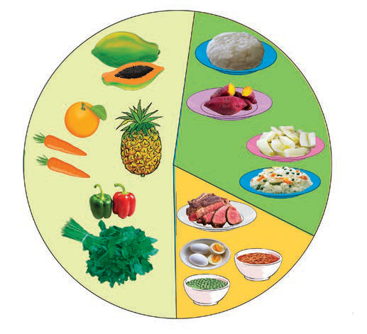

Figure 2: Example of main food groups in a balanced diet

Protective foods
Energy giving foods
Body building foods
Activity 2
- 1. Identify different foods available in your environment.
- 2. Sort the identified foods into energy-giving, body-building, or protective food groups.
Energy-giving foods
Foods that give the body energy include those rich in carbohydrates and fats. Carbohydrate-rich foods are maize, potatoes, cassava, bananas, rice and bread. Foods rich in fats include coconut, peanuts, sunflower seeds and avocados. These foods provide the energy needed for daily activities like playing, farming and walking. Fats also help keep the body warm. Figure 3 shows examples of foods rich in carbohydrates and fats.